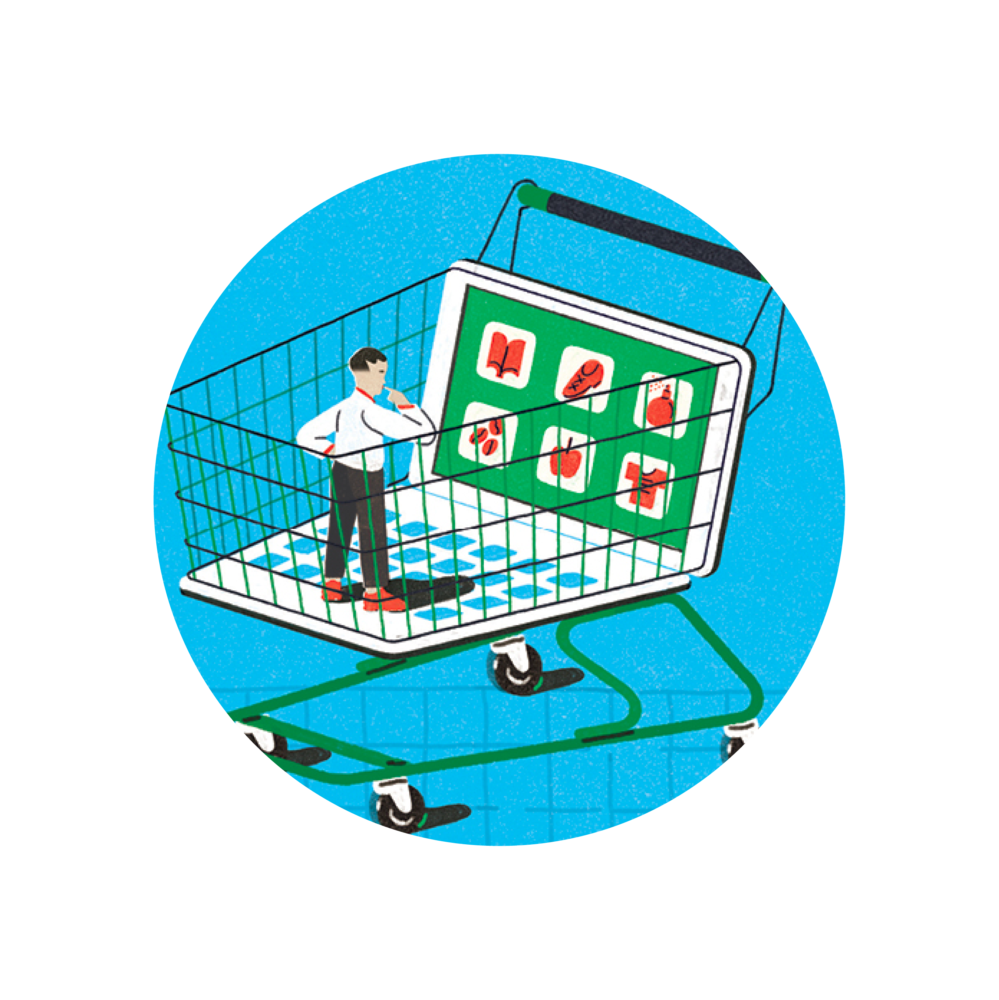

One of the struggles of professional-services firms is finding something new to say in their thought leadership. After all, they must constantly find ways to excite current and potential clients. In that pursuit, they sometimes make over-the-top claims about breakthrough thinking of one kind or another. In reality, there is precious little new under the sun in business and management thinking.
That doesn’t mean firms should take their frameworks and go home and sulk. There’s market value in publishing even modest analyses as long as authors have something distinctive to say.
So what does distinctive look like in thought leadership produced by professional-services firms?
That’s an issue on which I’ve spent much time over the years in mentoring up-and-coming editors whose job it is to help authors identify and highlight what they have to say that’s new. At the highest level, we ask, “What business problem is this article trying to solve?” (It seems an obvious point but many early outlines and drafts don’t explicitly address this question.)
Here are some ways to think about what could qualify as distinctive in a piece of content, even if the work doesn’t rise to Peter Drucker–level insights.
EY
“
Back to top
Debunking conventional
wisdom
Bain & Company
Shaping the consumer
of the future”
“
This is a solid approach when you can actually demonstrate what the conventional wisdom is rather than relying on a straw man. Authors often fall back on a myths-and-realities construction; that’s a useful model but overused.
Bain & Company
Teaching dinosaurs
to dance”
Trading myths: Addressing misconceptions about trade, jobs, and competitiveness
“
Deloitte
Leadership: Why a perennial issue?”
“
McKinsey & Company
Reporting new research results
Sometimes you don’t need a prescriptive 3,000-word article to have impact. Simply relating interesting research or survey results, accompanied by exhibits, may be enough to start a client conversation. It can also be a faster way to the market. My caveat on surveys is that the methodology of many of them is suspect. If the methodology isn’t rigorous, don’t publish the findings.
McKinsey & Company
Needle in a haystack: Patents that inspire agricultural innovation”
“
McKinsey & Company
The consumer decision journey”
“
Describing new functional techniques, tools, or approaches
The challenge here is to avoid overt marketing; in other words, don’t flog your proprietary solutions. That’s the antithesis of thought leadership. As is so often the case in thought leadership, real-world examples can help bring the utility of the tools alive.
There’s no shame in revisiting a perennial issue—for example, why customer relationship management systems falter—if you have a fresh take on it. But the positioning is key. Let the reader know immediately that you understand you're tackling an old problem but have a new take on it.
Framing a new solution to an old problem
“

McKinsey & Company
Inventing the 21st-century purchasing organization”
“
This may be the most common positioning method in thought leadership. It has served firms well during the COVID-19 pandemic; authors have adopted this approach dozens of times. In general, authors sometimes use a “lessons learned” conceit to organize their pieces.
Explaining how changes in market conditions call for a new response
Capgemini
COVID-19 and the age of the contactless customer experience: Winning the trust of consumers in a no-touch world
McKinsey & Company
Reimagine decision making to improve speed and quality”
“

PwC
Consumer companies must take leaps, not steps”
“

This is another common way to get into a subject. I see two keys to making this approach work. First, authors must show that the pitfalls are real challenges—not artificially derived to allow them to opine on a favorite subject. Second, the authors must demonstrate how their prescriptions overcome the pitfalls. Skipping the second part leaves your readers hanging.
Highlighting common pitfalls that undermine a strategy or an approach
BCG
Overcoming the four big barriers to innovation success”
“
There are times when a firm has yet to develop a point of view on a subject but feels compelled to get points on the board. Rather than publishing thin soup—which we see all too often—firms can tap the expertise of an outsider. There are other benefits to this approach: getting quality time with a client or prospect, making nice to a client, showing the public the firm is interested in addressing important business topics, and demonstrating to the business community that the firm has access to influential people.
Interviewing an external expert
Professional-services firms can produce perfectly acceptable thought leadership without making over-the-top claims about breakthroughs and the like. Readers of thought leadership content are happy for whatever value-adding insights they can get, even if incremental, and savvy enough to know when they are being bamboozled.
1.
2.
3.
4.
5.
6.
7.